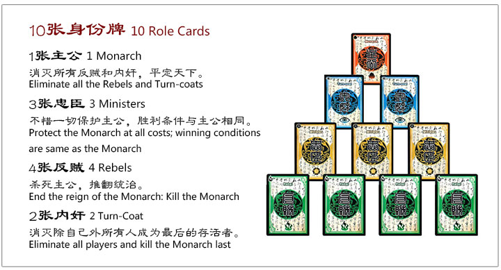

RULES
The standard mode of LTK can be played by 2 to 10 people.
Each player plays one of these four roles: Monarch ,
Minister , Rebel and Traitors.
There can be only one monarch in the game at all times, but the number of ministers,
rebels and traitors are determined by the total number of players,
as shown in the table on the right. Each player may have 3 or 4 Health points (see below),
depending on their character.
- "If there are 5 or more players playing,
the player playing as the Monarch may increase his/her total Health points by 1."
- "At the beginning of the game, each player must draw one "Role Card" to determine his
Others must keep their role card hidden until they are killed in the game."
- "When the role card has been distributed and all players know their role,
each player draws 4 cards.
- "The Monarch begins the first round.
He will draw 2 cards from the deck use the cards on hand appropriately."
- "When a rebel is killed, the killer draws three cards."
- "If the Monarch kills a Minister, the Monarch has to discard all
of his cards including equipment cards."
OBJECTIVES
Different roles have different victory conditions:
- "Monarch: Death of all the rebels and traitors."
- "Minister: Protect the monarch no matter the cost
(victory conditions are the same as the monarch)."
- "Rebel: Death of the Monarch (without leaving one Traitor as the sole survivor)."
- "Traitor: Death of every other player (including the other traitors), with the last death of the Monarch."
The game ends immediately if:
- "The Monarch is killed, or"
- "All the rebels and traitors are killed."
As long as one of the scenarios listed above occur at the endgame,
the associated roles can claim victory even if the character has already been killed.
In general, the Monarch and his ministers must work together to kill the rebels and traitors,
while the rebels can cooperate to kill off the ministers before attacking the Monarch.
Meanwhile, the traitor(s) can guise as a minister and help to kill the rebels,
before revolting against the ministers and finally confronting the Monarch.

TYPES OF CARDS
- ROLE Card - These cards determine the individual player's role
(Monarch/Ruler, Minister/Loyalist, Rebel or Defector/Turncoat) and his objectives.
Aside from the Monarch, other players must keep their role cards secret throughout
the game and reveal it when their character is killed in the game.
- LIFE Card - These cards serve as an indication of units of health of a player.
Players typically use their character cards to cover the health cards such
that the remaining points of health are revealed.
- HERO Card - These cards determine the character that a player shall be using.
The player assumes the allegiance and gender of the character selected,
and also acquires the special abilities of that player.
All characters in LTK are characters which appear in ROTK.
- SCROLL Card and Basic Cards - These cards are cards which perform strategic actions or can affect
multiple players.
all strategy cards can be neutralized by a Ward strategy card. These are playable action cards which can be used on other players or themselves.
Basic cards include Kill , Dodge , Peach and their variations, and can affect the health of a player.
Kill is used to cause damage to other players, Dodge is used to deflect a Kill attack (or the player loses 1 point of Health),
while Peach is used to recover 1 point of Health or save a dying character.
Basic cards can be identified by a diamond logo behind Chinese characters in the twelve o'clock position of the card.
There are also Time-delayed scroll cards that only take effect during the target player's turn.
- EQUIPMENT Card - These cards are placed in front of the player and serve to modify distance and range calculations,
as well as contribute to attack or defense attributes.
PLAY
There are six main phases to playing when it comes to any player's turn.
- Initial Phase (Beginning of the turn)
- Before the judgement phase, certain characters (such as Zhuge Liang or Zhen Ji)
may use their special abilities to manipulate their own statuses or the cards in the deck.
- Judgement Phase
- Players with Time-delayed status cards directed at them must draw and reveal cards on
the deck to judge if they pass or fail certain tests,
starting from the last status card played.
Failure will result in penalties such as unable to draw cards,
unable to play cards, or lose 3 health points from a Lightning attack card.
Before the judgement, however, players may reveal a Ward strategy card
to cancel the status cards played on them, and skip the judgement phase.
- Drawing Phase
- The player draws two cards from the deck.
Characters with special abilities (such as Zhou Yu or Zhang Liao)
may use them to take more cards or draw cards from other players.
- Action Phase
- Any number of cards may be played, but generally,
each player may only use the Strike card once,
unless otherwise determined by their character or equipment.
- Discard Phase
- After playing, the player will have to discard cards in his hand
such that the remaining number of cards is equal to his current Health points.
- End Phase (End of the turn)
- At the end of every turn, certain characters
(such as Diao Chan or Cao Ren) may use their special abilities.
DEATH
When a player's Health points is reduced to 0, he faces imminent death and must instantly take action: he may request to be saved by a Peach card (
thus letting other players play the card), or may use one immediately if he has it.
If he is successful, his health will be recovered to 1 point.
Otherwise, he dies (except some special character like Zhou Tai),
and must reveal his role card and discard all other cards.
If he is a Rebel and killed by a card from another player, that player may draw 3 cards.
It is possible for a player's health to have a negative value (such as suffering from a Lightning attack).
In this case, the player will need as many Peach cards as he requires to raise his health back to 1 point in order to continue the game
(for example, a Health point of -1 requires 2 Peach cards).
The abilities of certain cards or characters may involve healing more than 1 points of health, or even prolonged living below 1 Health point.